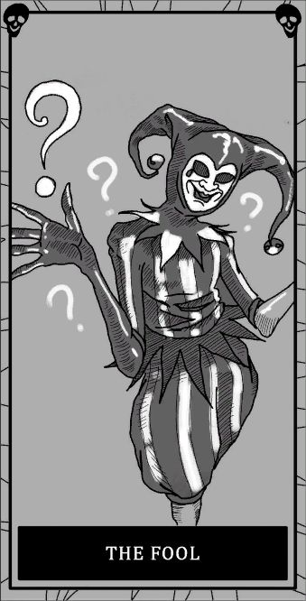
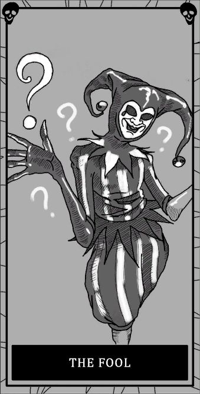
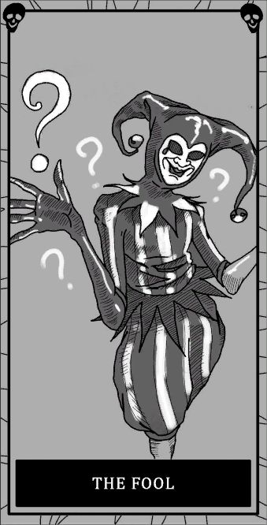
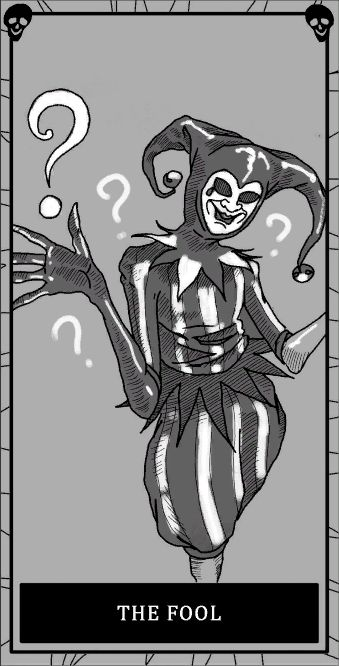

EMF 5 | Spirit Box | Escritura Ataca con una velocidad normal y con un 50% de cordura.
Utilizar el incienso provocará que no pueda atacar antes de los 3 minutos (en permatack).
EMF 5 | Spirit Box | DOTS Ataca con una velocidad normal y con un 50% de cordura.
No pisa la sal y puede teletransportarse. Además, después de tirar el incienso en caza, no vuelve a cazar hasta pasados 3 minutos.
PD: Mantén el crucifijo cerca por si se te teletransporta.
Spirit Box | Huellas dactilares | DOTS Ataca con una velocidad normal y con un 50% de cordura.
Desaparece en las fotos tomadas en manifestación o tras activar el pentáculo, y no se distorsionan. En caza se le ve más invisible que visible. Al mirarle te baja la cordura más rápido y puede seguir a alguien (y cambiar de target).
Spirit Box | Huellas dactilares | Escritura Ataca con una velocidad normal y con un 50% de cordura.
Puede tirar múltiples objetos a la vez y muy lejos.
PD: Puedes amontonar una pila de objetos para ver si tira varios objetos a la vez en caza.
Orbes | Huellas dactilares | DOTS Ataca con una velocidad normal y con un 50% de cordura (al target).
Sigue a un único "target", al cual únicamente puede matar en caza. Además que puedes oirlo cantando a través de un micrófono parabólico.
EMF 5 | Huellas dactilares | Temperaturas heladas Ataca con una velocidad rápida (cuando los plomos están encendidos y estamos lejos), si no con una velocidad normal, y con un 50% de cordura.
No puede bajar los plomos por sí mismo y si nos ve en caza acelera inmediatamente. Además puede bajar un 25% de cordura de repente.
Orbes | Spirit Box | Escritura Ataca con una velocidad normal y con un 50% de cordura (con luces apagadas) y con un 40% de cordura (con luces encendidas).
Te puede apagar la luz después de encenderla y puede apagar tres luces a la vez sin evento.
Orbes | Escritura | Temperaturas heladas Ataca con una velocidad rápida (cuando te ve o te oye) y con una velocidad normal (cuando no te ve ni oye), y con un 50% de cordura.
EMF 5 | Temperaturas heladas | Escritura Ataca con una velocidad normal y con un 35% de cordura.
No hace nada si estás cerca de ella.
Huellas dactilares | Temperaturas heladas | Escritura Ataca con una velocidad normal y con un 70% de cordura (o con 100% si hace la habilidad).
Los crucifijos aumentan su rango un 50% más. Además atacan más seguido (1 minuto en permatack con incienso).
PD: La mejor manera de identificarlo es estando en permatack (0% de cordura) y tirar incienso. Si dura 1 minuto en volver a atacar es demonio, si dura 1 minuto y medio puede ser cualquiera y si dura 3 minutos es un espectro.
Orbes | Temperaturas heladas | DOTS Ataca con una velocidad normal y con 50% de cordura.
Al cerrar una puerta va a sonar unos segundos más tarde. Además puede cerrar completamente dos puertas a la vez.
EMF 5 | Temperaturas heladas | DOTS Ataca con una velocidad normal y con un 50% de cordura.
Se manifiesta mucho (te baja mucha cordura) y en caza se mantiene más visible que invisible. Además no tiene evento de bola.
Orbes | Spirit Box | DOTS Ataca con una velocidad normal y con un 80% de cordura (si hablas cerca de él), si no con un 50% de cordura.
No te oye cerca con la radio en cacería.
PD: La mejor manera de idenificarlo es activando la radio (con la "B") en cacería. Si no va a tu posición inmediatamente es un yokai.
Orbes | Temperaturas heladas | Huellas dactilares Ataca con una velocidad rápida (cuando está en un sitio helado), si no con una velocidad normal, y con un 50% de cordura.
Puede echar vaho mientras está en caza.
EMF 5 | DOTS | Huellas dactilares Atacan con una velocidad normal y con un 50% de cordura.
Pasa por el DOTS solo por la cámara y cuando estás lejos.
EMF 5 | Escritura | Huellas dactilares Atacan con una velocidad normal y con un 50% de cordura.
Sus pasos se escuchan muy bajos.
Orbes | Spirit Box | Temperaturas heladas Atacan con una velocidad normal y con un 60% de cordura (sin una fuente de calor) y con un 40% de cordura (con una fuente de calor).
Puede entrar en cazería si apaga una fuente de calor.
EMF 5 | Spirit Box | Temperaturas heladas Uno de los dos ataca con una velocidad normal y el otro con una velocidad rápida, y ataca con un 50% de cordura.
El gemelo caza lejos y va más rápido.
EMF 5 | Orbes | DOTS Ataca con una velocidad rápida (cuando hay dispositivos electronicos) y con una velocidad normal (cuando no los hay), y ataca con un 65% de cordura (cuando hay dispositivos electrónicos cerca) y de normal con un 50%.
Aquí un ejemplo.EMF 5 | Orbes | Huellas dactilares Ataca con una velocidad normal y con un 50% de cordura.
Es posible que te ocules huellas. Además puede dejar una huella de seis dedos.

Spirit Box | Orbes | Huellas dactilares | Temperaturas heladas La cordura y la velocidad de ataque depende del fantasma.
Es capaz de imitar a otro fantasma (cada 2 minutos rota de fantasma a uno nuevo).
PD: Siempre que haya orbes duda del mímico aunque no esté marcado en el diario.
Spirit Box | Escritura | Temperaturas heladas Ataca con una velocidad rápida (cuando tienes 0% de cordura) y con una velocidad normal (cuando tienes 100% de cordura), y con un 50% de cordura.
Si te habla con la Spirit Box te va a maldecir, drenando tu cordura rápidamente. Además, el parón del incienso en ataque aumenta en un 50%.
Spirit Box | Escritura | DOTS Ataca con una velocidad rápida (cuando estás lejos de él) y con una velocidad normal (cuando estás cerca de él), y con un 40% de cordura.
Hay que evadirle sin esconderse de él, pues te persigue constantemente. Además tiene un grito especial y nunca acelera en cacería aunque te esté viendo.
Orbes | Escritura | DOTS Ataca con una velocidad rápida (cuando es joven) y con una velocidad normal (cuando es viejo), y con un 75% de cordura (al principio) hasta un 15% de cordura.
Cuanto más tiempo estás en su habitación, más viejo se hace (cada dos minutos), disminuyendo su velocidad y un 6% de su cordura cada vez. Además nunca acelera en cacería aunque te esté viendo.